Last updated: 2026-03-08
Checks: 6 1
Knit directory: Data_Analysis/
This reproducible R Markdown analysis was created with workflowr (version 1.7.2). The Checks tab describes the reproducibility checks that were applied when the results were created. The Past versions tab lists the development history.
Great! Since the R Markdown file has been committed to the Git repository, you know the exact version of the code that produced these results.
Great job! The global environment was empty. Objects defined in the global environment can affect the analysis in your R Markdown file in unknown ways. For reproduciblity it’s best to always run the code in an empty environment.
The command set.seed(20260226) was run prior to running
the code in the R Markdown file. Setting a seed ensures that any results
that rely on randomness, e.g. subsampling or permutations, are
reproducible.
Great job! Recording the operating system, R version, and package versions is critical for reproducibility.
Nice! There were no cached chunks for this analysis, so you can be confident that you successfully produced the results during this run.
Using absolute paths to the files within your workflowr project makes it difficult for you and others to run your code on a different machine. Change the absolute path(s) below to the suggested relative path(s) to make your code more reproducible.
| absolute | relative |
|---|---|
| /Users/thanhhuong/R/Data_Analysis | . |
Great! You are using Git for version control. Tracking code development and connecting the code version to the results is critical for reproducibility.
The results in this page were generated with repository version 551fb64. See the Past versions tab to see a history of the changes made to the R Markdown and HTML files.
Note that you need to be careful to ensure that all relevant files for
the analysis have been committed to Git prior to generating the results
(you can use wflow_publish or
wflow_git_commit). workflowr only checks the R Markdown
file, but you know if there are other scripts or data files that it
depends on. Below is the status of the Git repository when the results
were generated:
Ignored files:
Ignored: .DS_Store
Ignored: .Rhistory
Ignored: .Rproj.user/
Ignored: analysis/.Rhistory
Unstaged changes:
Modified: .gitignore
Note that any generated files, e.g. HTML, png, CSS, etc., are not included in this status report because it is ok for generated content to have uncommitted changes.
These are the previous versions of the repository in which changes were
made to the R Markdown (analysis/ML_3.Rmd) and HTML
(docs/ML_3.html) files. If you’ve configured a remote Git
repository (see ?wflow_git_remote), click on the hyperlinks
in the table below to view the files as they were in that past version.
| File | Version | Author | Date | Message |
|---|---|---|---|---|
| html | 551fb64 | Huong PHAM | 2026-03-08 | Build site. |
| Rmd | ef88e31 | Huong PHAM | 2026-03-08 | 8 Mar |
| html | ef88e31 | Huong PHAM | 2026-03-08 | 8 Mar |
Une compagnie pharmaceutique américaine souhaite évaluer l’efficacité d’un nouveau médicament permettant de réduire la durée d’un épisode de fièvre selon le sexe (Femme - Homme) et l’ethnie (Cau- casien, Africain Americain, Hispanique). Six groupes ont été formés, correspondant à toutes les com- binaisons possibles de ces deux facteurs. Nous disposons d’un échantillon de 5 individus pour chaque combinaison des deux facteurs, soit 30 observations au total, n’ayant aucun lien entre eux. Nous dispo- sons des informations suivantes : — Le sexe (Femme/Homme) ; — L’ethnie (Africain Amerciain/Caucasien/Hispanique) — La durée nécessaire pour réduire la fièvre (en minutes).
Importez le jeu de données ANOVA_II_exercice1.csv dans R. Puis mettez en forme les données si nécessaire.
## 1. Importation des données
setwd("/Users/thanhhuong/R/Data_Analysis")
exercice1 <- read.csv(file = "/Volumes/ORICO/Modèle Linaire/TD ANOVA II-20260121/ANOVA_II_exercice1.csv",
sep = ";",
header = TRUE)
# Mise en forme
str(exercice1)'data.frame': 30 obs. of 4 variables:
$ Obs : int 1 2 3 4 5 6 7 8 9 10 ...
$ Sexe : chr "Femme" "Femme" "Femme" "Femme" ...
$ Ethnie: chr "Caucasien" "Caucasien" "Caucasien" "Caucasien" ...
$ Duree : int 25 29 47 26 28 46 51 33 47 41 ...exercice1$Sexe <- as.factor(exercice1$Sexe)
exercice1$Ethnie <- as.factor(exercice1$Ethnie)
exercice1 <- exercice1[,c(-1)]
str(exercice1)'data.frame': 30 obs. of 3 variables:
$ Sexe : Factor w/ 2 levels "Femme","Homme": 1 1 1 1 1 1 1 1 1 1 ...
$ Ethnie: Factor w/ 3 levels "Africain Americain",..: 2 2 2 2 2 1 1 1 1 1 ...
$ Duree : int 25 29 47 26 28 46 51 33 47 41 ...Effectuez des statistiques descriptives de la durée nécessaire pour réduire la fièvre globalement, pour chaque facteur, puis pour chaque combinaison des deux facteurs. Représentez graphiquement ces derniers éléments. Que pouvez-vous dire ?
## 2. Statistiques descriptives
# Statistiques descriptives
mean(exercice1$Duree)[1] 39.5## Approche 1 :
library(tidyverse) Warning: package 'ggplot2' was built under R version 4.4.3Warning: package 'tibble' was built under R version 4.4.3Warning: package 'tidyr' was built under R version 4.4.3Warning: package 'readr' was built under R version 4.4.3Warning: package 'purrr' was built under R version 4.4.3Warning: package 'dplyr' was built under R version 4.4.3Warning: package 'lubridate' was built under R version 4.4.3── Attaching core tidyverse packages ──────────────────────── tidyverse 2.0.0 ──
✔ dplyr 1.2.0 ✔ readr 2.1.6
✔ forcats 1.0.1 ✔ stringr 1.6.0
✔ ggplot2 4.0.2 ✔ tibble 3.3.1
✔ lubridate 1.9.5 ✔ tidyr 1.3.2
✔ purrr 1.2.1
── Conflicts ────────────────────────────────────────── tidyverse_conflicts() ──
✖ dplyr::filter() masks stats::filter()
✖ dplyr::lag() masks stats::lag()
ℹ Use the conflicted package (<http://conflicted.r-lib.org/>) to force all conflicts to become errorslibrary(rstatix)
Attaching package: 'rstatix'
The following object is masked from 'package:stats':
filtermoyenne_sexe <- exercice1 %>%
group_by(Sexe) %>%
get_summary_stats(Duree, type = "mean_sd")
moyenne_sexe# A tibble: 2 × 5
Sexe variable n mean sd
<fct> <fct> <dbl> <dbl> <dbl>
1 Femme Duree 15 34 10.6
2 Homme Duree 15 45 14.1moyenne_ethnie <- exercice1 %>%
group_by(Ethnie) %>%
get_summary_stats(Duree, type = "mean_sd")
moyenne_ethnie# A tibble: 3 × 5
Ethnie variable n mean sd
<fct> <fct> <dbl> <dbl> <dbl>
1 Africain Americain Duree 10 49.4 10.4
2 Caucasien Duree 10 41.1 13.3
3 Hispanique Duree 10 28 6.57moyenne_sexe_ethnie <- exercice1 %>%
group_by(Sexe,Ethnie) %>%
get_summary_stats(Duree, type = "mean_sd")
moyenne_sexe_ethnie# A tibble: 6 × 6
Sexe Ethnie variable n mean sd
<fct> <fct> <fct> <dbl> <dbl> <dbl>
1 Femme Africain Americain Duree 5 43.6 6.91
2 Femme Caucasien Duree 5 31 9.08
3 Femme Hispanique Duree 5 27.4 9.26
4 Homme Africain Americain Duree 5 55.2 10.6
5 Homme Caucasien Duree 5 51.2 7.69
6 Homme Hispanique Duree 5 28.6 3.21## Approche 2 :
aggregate(Duree ~ Sexe,
data = exercice1,
FUN = mean) Sexe Duree
1 Femme 34
2 Homme 45aggregate(Duree ~ Ethnie,
data = exercice1,
FUN = mean) Ethnie Duree
1 Africain Americain 49.4
2 Caucasien 41.1
3 Hispanique 28.0aggregate(Duree ~ Sexe + Ethnie,
data = exercice1,
FUN = mean) Sexe Ethnie Duree
1 Femme Africain Americain 43.6
2 Homme Africain Americain 55.2
3 Femme Caucasien 31.0
4 Homme Caucasien 51.2
5 Femme Hispanique 27.4
6 Homme Hispanique 28.6# Représentation graphique des données
library(ggplot2)
ggplot(exercice1,
aes(x = Ethnie, y = Duree, fill = Sexe)) +
geom_boxplot() +
theme(axis.text = element_text(size=12)) 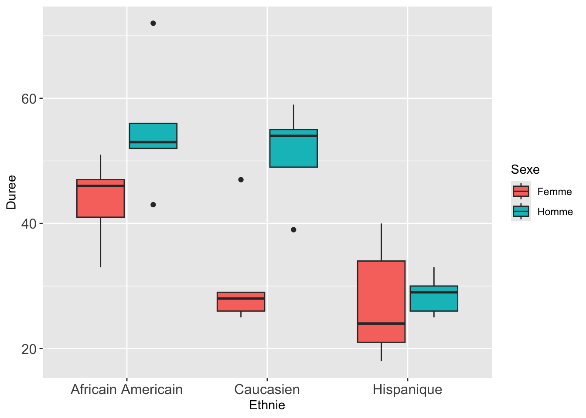
| Version | Author | Date |
|---|---|---|
| ef88e31 | Huong PHAM | 2026-03-08 |
ggplot(exercice1,
aes(x = Sexe, y = Duree, fill = Ethnie)) +
geom_boxplot() +
theme(axis.text = element_text(size=12)) 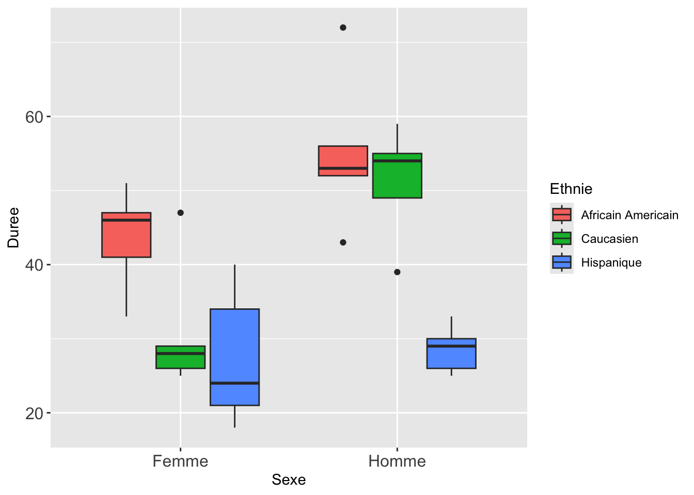
| Version | Author | Date |
|---|---|---|
| ef88e31 | Huong PHAM | 2026-03-08 |
Pourquoi une analyse de la variance à deux facteurs est la méthode statistique appropriée pour analyser l’effet du sexe et de l’ethnie sur la durée de réduction de la fièvre ?
Un terme d’intéraction entre les deux facteurs vous semble-t-il être pertinent ici ?
Posez les hypothèses de cette ANOVA II, puis réalisez-là avec R. Le terme d’intéraction est-il significatif. Qu’est-ce que cela veut dire ?
## 5. ANOVA II : Approche directe
anova2 <- aov(formula = Duree ~ Sexe + Ethnie + Sexe*Ethnie,
data = exercice1)
summary(anova2) Df Sum Sq Mean Sq F value Pr(>F)
Sexe 1 907.5 907.5 13.705 0.00111 **
Ethnie 2 2328.2 1164.1 17.580 1.99e-05 ***
Sexe:Ethnie 2 452.6 226.3 3.418 0.04943 *
Residuals 24 1589.2 66.2
---
Signif. codes: 0 '***' 0.001 '**' 0.01 '*' 0.05 '.' 0.1 ' ' 1Nous souhaitons maintenant réaliser cette analyse à partir de l’approche modélisation. Ecrivez l’équation du modèle, puis estimez-le avec R. Retrouvez les éléments obtenus avec l’approche directe.
## 6. ANOVA II : Approche modélisation
# Modification des contrastes :
contrasts(exercice1$Sexe) Homme
Femme 0
Homme 1contrasts(exercice1$Sexe) <- "contr.sum"
contrasts(exercice1$Sexe) [,1]
Femme 1
Homme -1contrasts(exercice1$Ethnie) Caucasien Hispanique
Africain Americain 0 0
Caucasien 1 0
Hispanique 0 1contrasts(exercice1$Ethnie) <- "contr.sum"
contrasts(exercice1$Ethnie) [,1] [,2]
Africain Americain 1 0
Caucasien 0 1
Hispanique -1 -1# Estimation du modèle
mod1 <- lm(Duree ~ Sexe + Ethnie + Sexe*Ethnie,
data = exercice1)
anova(mod1)Analysis of Variance Table
Response: Duree
Df Sum Sq Mean Sq F value Pr(>F)
Sexe 1 907.5 907.50 13.7050 0.001115 **
Ethnie 2 2328.2 1164.10 17.5802 1.987e-05 ***
Sexe:Ethnie 2 452.6 226.30 3.4176 0.049429 *
Residuals 24 1589.2 66.22
---
Signif. codes: 0 '***' 0.001 '**' 0.01 '*' 0.05 '.' 0.1 ' ' 1summary(anova2) Df Sum Sq Mean Sq F value Pr(>F)
Sexe 1 907.5 907.5 13.705 0.00111 **
Ethnie 2 2328.2 1164.1 17.580 1.99e-05 ***
Sexe:Ethnie 2 452.6 226.3 3.418 0.04943 *
Residuals 24 1589.2 66.2
---
Signif. codes: 0 '***' 0.001 '**' 0.01 '*' 0.05 '.' 0.1 ' ' 1Vérifiez les hypothèses du modèle, puis interprétez les résultats si cela vous semble pertinent. Que pouvez-vous dire ?
## 7. Vérification des hypothèses du modèle
# Normalité
residus1 <- resid(mod1)
library("car")Warning: package 'car' was built under R version 4.4.3Loading required package: carDataWarning: package 'carData' was built under R version 4.4.3
Attaching package: 'car'The following object is masked from 'package:dplyr':
recodeThe following object is masked from 'package:purrr':
someqqPlot(residus1)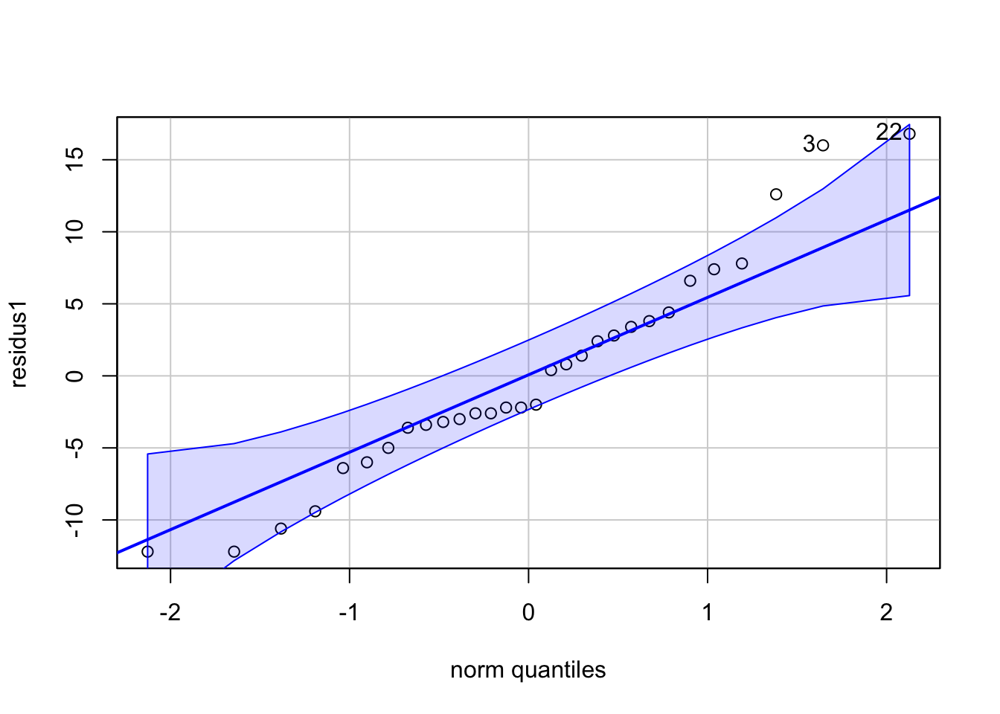
| Version | Author | Date |
|---|---|---|
| ef88e31 | Huong PHAM | 2026-03-08 |
[1] 22 3# Homoscédasticité
exercice1$prediction1 <- predict(mod1, newdata = exercice1, type = "response")Warning: contrasts dropped from factor SexeWarning: contrasts dropped from factor Ethnieplot(residus1 ~ exercice1$prediction1,
xlab = "Durée moyenne pour réduire la fièvre - prédictions",
ylab = "Résidus")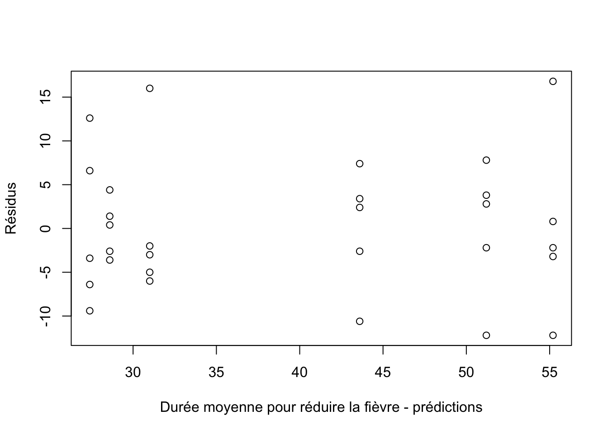
| Version | Author | Date |
|---|---|---|
| ef88e31 | Huong PHAM | 2026-03-08 |
plot(mod1)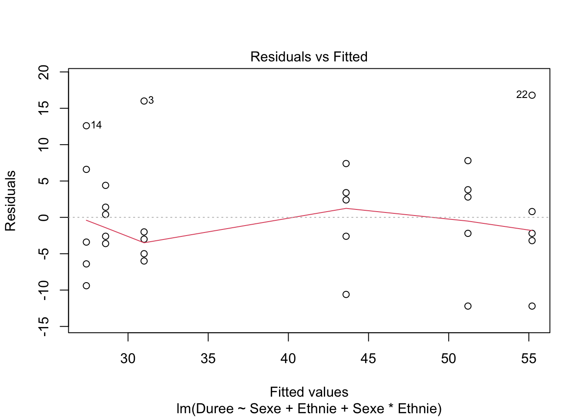
| Version | Author | Date |
|---|---|---|
| ef88e31 | Huong PHAM | 2026-03-08 |
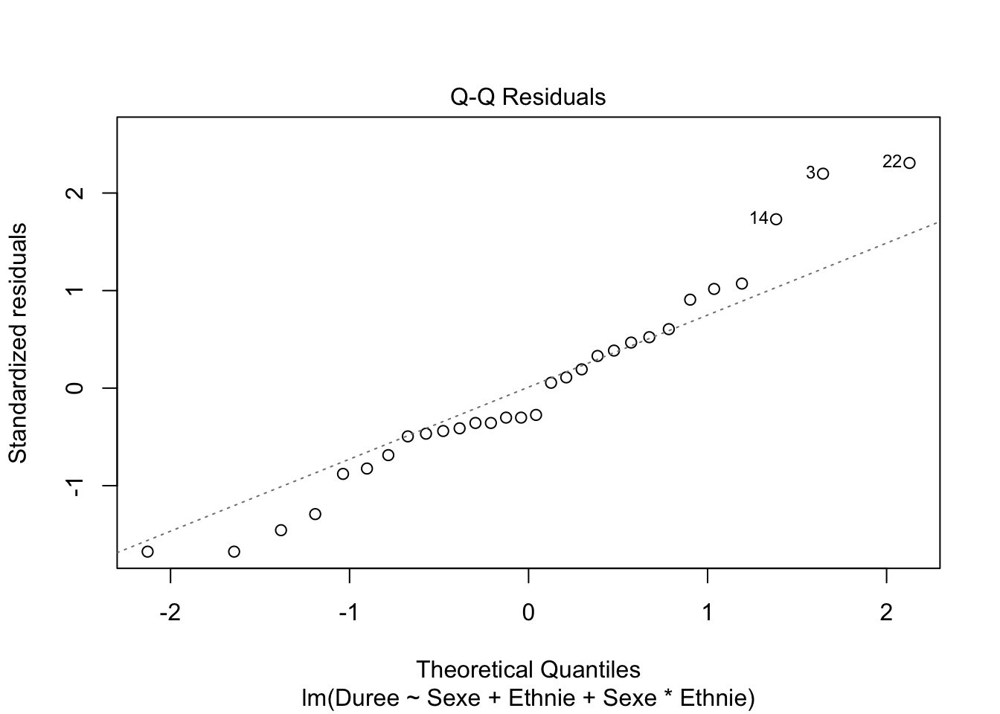
| Version | Author | Date |
|---|---|---|
| ef88e31 | Huong PHAM | 2026-03-08 |
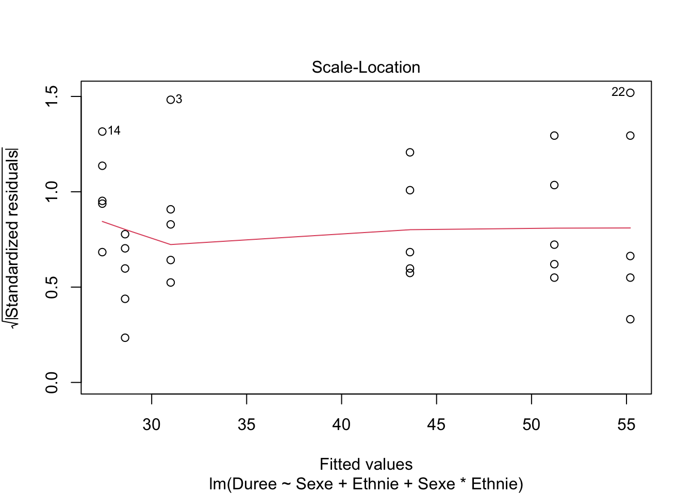
| Version | Author | Date |
|---|---|---|
| ef88e31 | Huong PHAM | 2026-03-08 |
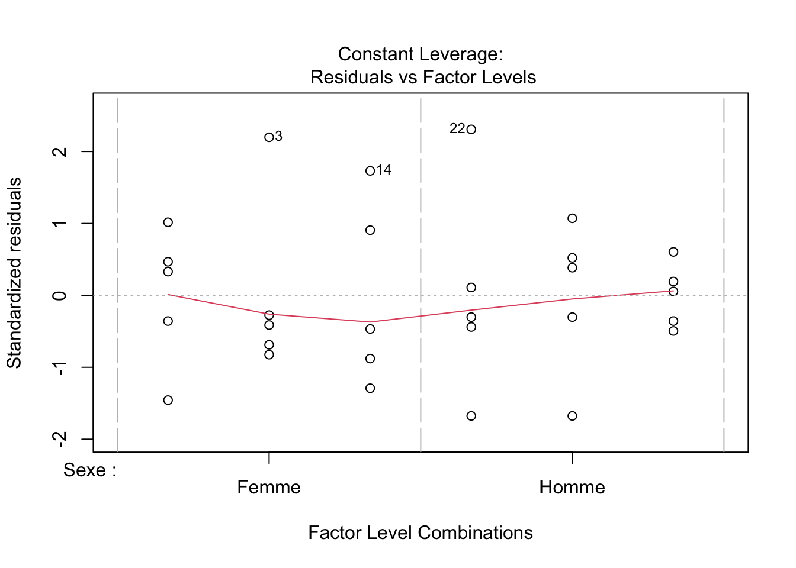
| Version | Author | Date |
|---|---|---|
| ef88e31 | Huong PHAM | 2026-03-08 |
# Résultats
## Tests F
anova(mod1)Analysis of Variance Table
Response: Duree
Df Sum Sq Mean Sq F value Pr(>F)
Sexe 1 907.5 907.50 13.7050 0.001115 **
Ethnie 2 2328.2 1164.10 17.5802 1.987e-05 ***
Sexe:Ethnie 2 452.6 226.30 3.4176 0.049429 *
Residuals 24 1589.2 66.22
---
Signif. codes: 0 '***' 0.001 '**' 0.01 '*' 0.05 '.' 0.1 ' ' 1summary(mod1)
Call:
lm(formula = Duree ~ Sexe + Ethnie + Sexe * Ethnie, data = exercice1)
Residuals:
Min 1Q Median 3Q Max
-12.20 -3.55 -2.10 3.70 16.80
Coefficients:
Estimate Std. Error t value Pr(>|t|)
(Intercept) 39.500 1.486 26.587 < 2e-16 ***
Sexe1 -5.500 1.486 -3.702 0.00111 **
Ethnie1 9.900 2.101 4.712 8.64e-05 ***
Ethnie2 1.600 2.101 0.762 0.45376
Sexe1:Ethnie1 -0.300 2.101 -0.143 0.88765
Sexe1:Ethnie2 -4.600 2.101 -2.189 0.03853 *
---
Signif. codes: 0 '***' 0.001 '**' 0.01 '*' 0.05 '.' 0.1 ' ' 1
Residual standard error: 8.137 on 24 degrees of freedom
Multiple R-squared: 0.6989, Adjusted R-squared: 0.6361
F-statistic: 11.14 on 5 and 24 DF, p-value: 1.237e-05## Estimation des paramètres
summary(mod1)
Call:
lm(formula = Duree ~ Sexe + Ethnie + Sexe * Ethnie, data = exercice1)
Residuals:
Min 1Q Median 3Q Max
-12.20 -3.55 -2.10 3.70 16.80
Coefficients:
Estimate Std. Error t value Pr(>|t|)
(Intercept) 39.500 1.486 26.587 < 2e-16 ***
Sexe1 -5.500 1.486 -3.702 0.00111 **
Ethnie1 9.900 2.101 4.712 8.64e-05 ***
Ethnie2 1.600 2.101 0.762 0.45376
Sexe1:Ethnie1 -0.300 2.101 -0.143 0.88765
Sexe1:Ethnie2 -4.600 2.101 -2.189 0.03853 *
---
Signif. codes: 0 '***' 0.001 '**' 0.01 '*' 0.05 '.' 0.1 ' ' 1
Residual standard error: 8.137 on 24 degrees of freedom
Multiple R-squared: 0.6989, Adjusted R-squared: 0.6361
F-statistic: 11.14 on 5 and 24 DF, p-value: 1.237e-05Effectuez des comparaisons deux à deux, puis représenter graphiquement les résultats obtenus. Que pouvez-vous conclure ?
## 8. Comparaison 2 à 2
library(emmeans)Warning: package 'emmeans' was built under R version 4.4.3Welcome to emmeans.
Caution: You lose important information if you filter this package's results.
See '? untidy'emmeans(mod1, specs=pairwise ~ Ethnie|Sexe, adjust = "bonferroni")$emmeans
Sexe = Femme:
Ethnie emmean SE df lower.CL upper.CL
Africain Americain 43.6 3.64 24 36.1 51.1
Caucasien 31.0 3.64 24 23.5 38.5
Hispanique 27.4 3.64 24 19.9 34.9
Sexe = Homme:
Ethnie emmean SE df lower.CL upper.CL
Africain Americain 55.2 3.64 24 47.7 62.7
Caucasien 51.2 3.64 24 43.7 58.7
Hispanique 28.6 3.64 24 21.1 36.1
Confidence level used: 0.95
$contrasts
Sexe = Femme:
contrast estimate SE df t.ratio p.value
Africain Americain - Caucasien 12.6 5.15 24 2.448 0.0661
Africain Americain - Hispanique 16.2 5.15 24 3.148 0.0131
Caucasien - Hispanique 3.6 5.15 24 0.700 1.0000
Sexe = Homme:
contrast estimate SE df t.ratio p.value
Africain Americain - Caucasien 4.0 5.15 24 0.777 1.0000
Africain Americain - Hispanique 26.6 5.15 24 5.169 <0.0001
Caucasien - Hispanique 22.6 5.15 24 4.391 0.0006
P value adjustment: bonferroni method for 3 tests emmeans(mod1, specs=pairwise ~ Sexe|Ethnie, adjust = "bonferroni")$emmeans
Ethnie = Africain Americain:
Sexe emmean SE df lower.CL upper.CL
Femme 43.6 3.64 24 36.1 51.1
Homme 55.2 3.64 24 47.7 62.7
Ethnie = Caucasien:
Sexe emmean SE df lower.CL upper.CL
Femme 31.0 3.64 24 23.5 38.5
Homme 51.2 3.64 24 43.7 58.7
Ethnie = Hispanique:
Sexe emmean SE df lower.CL upper.CL
Femme 27.4 3.64 24 19.9 34.9
Homme 28.6 3.64 24 21.1 36.1
Confidence level used: 0.95
$contrasts
Ethnie = Africain Americain:
contrast estimate SE df t.ratio p.value
Femme - Homme -11.6 5.15 24 -2.254 0.0336
Ethnie = Caucasien:
contrast estimate SE df t.ratio p.value
Femme - Homme -20.2 5.15 24 -3.925 0.0006
Ethnie = Hispanique:
contrast estimate SE df t.ratio p.value
Femme - Homme -1.2 5.15 24 -0.233 0.8176emmeans(mod1, specs=pairwise ~ Sexe, adjust = "bonferroni")NOTE: Results may be misleading due to involvement in interactions$emmeans
Sexe emmean SE df lower.CL upper.CL
Femme 34 2.1 24 29.7 38.3
Homme 45 2.1 24 40.7 49.3
Results are averaged over the levels of: Ethnie
Confidence level used: 0.95
$contrasts
contrast estimate SE df t.ratio p.value
Femme - Homme -11 2.97 24 -3.702 0.0011
Results are averaged over the levels of: Ethnie emmeans(mod1, specs=pairwise ~ Ethnie, adjust = "bonferroni")NOTE: Results may be misleading due to involvement in interactions$emmeans
Ethnie emmean SE df lower.CL upper.CL
Africain Americain 49.4 2.57 24 44.1 54.7
Caucasien 41.1 2.57 24 35.8 46.4
Hispanique 28.0 2.57 24 22.7 33.3
Results are averaged over the levels of: Sexe
Confidence level used: 0.95
$contrasts
contrast estimate SE df t.ratio p.value
Africain Americain - Caucasien 8.3 3.64 24 2.281 0.0952
Africain Americain - Hispanique 21.4 3.64 24 5.881 <0.0001
Caucasien - Hispanique 13.1 3.64 24 3.600 0.0043
Results are averaged over the levels of: Sexe
P value adjustment: bonferroni method for 3 tests emmeans(mod1, specs=pairwise ~ Ethnie|Sexe, adjust = "BH")$emmeans
Sexe = Femme:
Ethnie emmean SE df lower.CL upper.CL
Africain Americain 43.6 3.64 24 36.1 51.1
Caucasien 31.0 3.64 24 23.5 38.5
Hispanique 27.4 3.64 24 19.9 34.9
Sexe = Homme:
Ethnie emmean SE df lower.CL upper.CL
Africain Americain 55.2 3.64 24 47.7 62.7
Caucasien 51.2 3.64 24 43.7 58.7
Hispanique 28.6 3.64 24 21.1 36.1
Confidence level used: 0.95
$contrasts
Sexe = Femme:
contrast estimate SE df t.ratio p.value
Africain Americain - Caucasien 12.6 5.15 24 2.448 0.0331
Africain Americain - Hispanique 16.2 5.15 24 3.148 0.0131
Caucasien - Hispanique 3.6 5.15 24 0.700 0.4910
Sexe = Homme:
contrast estimate SE df t.ratio p.value
Africain Americain - Caucasien 4.0 5.15 24 0.777 0.4446
Africain Americain - Hispanique 26.6 5.15 24 5.169 <0.0001
Caucasien - Hispanique 22.6 5.15 24 4.391 0.0003
P value adjustment: BH method for 3 tests emmeans(mod1, specs=pairwise ~ Ethnie|Sexe, adjust = "holm")$emmeans
Sexe = Femme:
Ethnie emmean SE df lower.CL upper.CL
Africain Americain 43.6 3.64 24 36.1 51.1
Caucasien 31.0 3.64 24 23.5 38.5
Hispanique 27.4 3.64 24 19.9 34.9
Sexe = Homme:
Ethnie emmean SE df lower.CL upper.CL
Africain Americain 55.2 3.64 24 47.7 62.7
Caucasien 51.2 3.64 24 43.7 58.7
Hispanique 28.6 3.64 24 21.1 36.1
Confidence level used: 0.95
$contrasts
Sexe = Femme:
contrast estimate SE df t.ratio p.value
Africain Americain - Caucasien 12.6 5.15 24 2.448 0.0441
Africain Americain - Hispanique 16.2 5.15 24 3.148 0.0131
Caucasien - Hispanique 3.6 5.15 24 0.700 0.4910
Sexe = Homme:
contrast estimate SE df t.ratio p.value
Africain Americain - Caucasien 4.0 5.15 24 0.777 0.4446
Africain Americain - Hispanique 26.6 5.15 24 5.169 <0.0001
Caucasien - Hispanique 22.6 5.15 24 4.391 0.0004
P value adjustment: holm method for 3 tests # Représentation graphique
with(
exercice1,
interaction.plot(Ethnie, Sexe, Duree)
)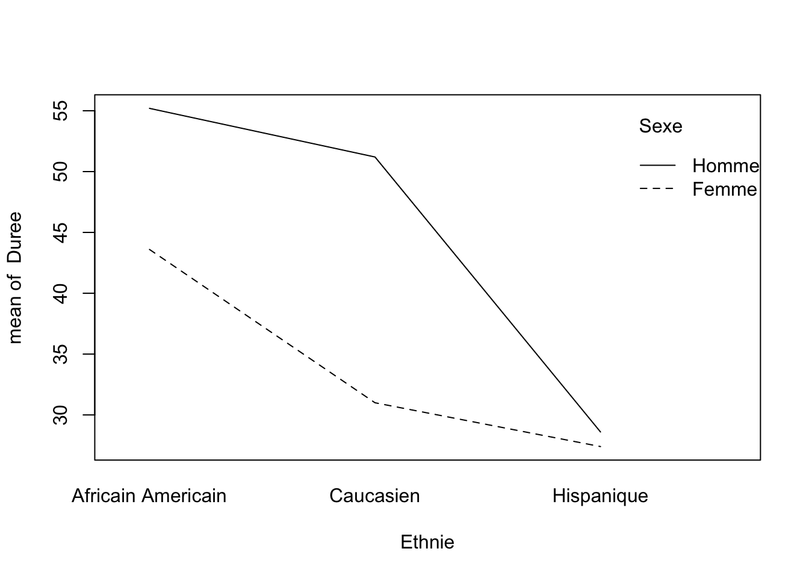
| Version | Author | Date |
|---|---|---|
| ef88e31 | Huong PHAM | 2026-03-08 |
library(ggpubr)
ggline(exercice1, # Dataset
x = "Ethnie",
y = "Duree",
color = "Sexe",
add = c("mean_se") # add mean and standard error
) +
labs(y = "Durée moyenne (minutes)")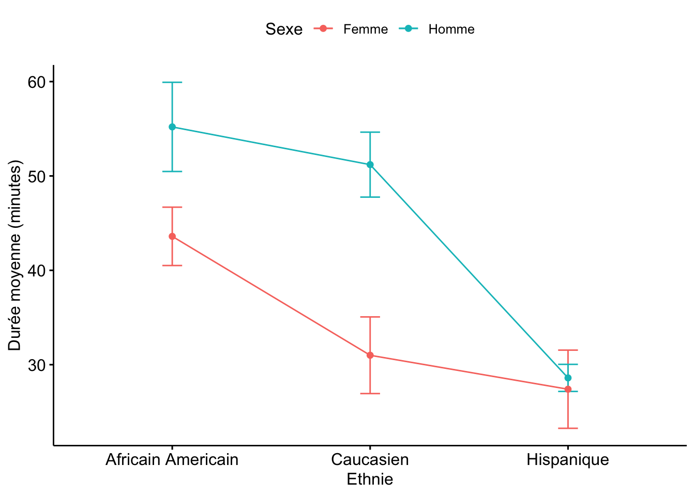
| Version | Author | Date |
|---|---|---|
| ef88e31 | Huong PHAM | 2026-03-08 |
Comparez les résultats des ANOVA de type I, II et III. Que constatez-vous ?
## 9. Comparaison ANOVA TYPE I, II et III
anova(mod1) # Type IAnalysis of Variance Table
Response: Duree
Df Sum Sq Mean Sq F value Pr(>F)
Sexe 1 907.5 907.50 13.7050 0.001115 **
Ethnie 2 2328.2 1164.10 17.5802 1.987e-05 ***
Sexe:Ethnie 2 452.6 226.30 3.4176 0.049429 *
Residuals 24 1589.2 66.22
---
Signif. codes: 0 '***' 0.001 '**' 0.01 '*' 0.05 '.' 0.1 ' ' 1library(car)
Anova(mod1, type = "II") # Type IIAnova Table (Type II tests)
Response: Duree
Sum Sq Df F value Pr(>F)
Sexe 907.5 1 13.7050 0.001115 **
Ethnie 2328.2 2 17.5802 1.987e-05 ***
Sexe:Ethnie 452.6 2 3.4176 0.049429 *
Residuals 1589.2 24
---
Signif. codes: 0 '***' 0.001 '**' 0.01 '*' 0.05 '.' 0.1 ' ' 1Anova(mod1, type = "III") # Type IIIAnova Table (Type III tests)
Response: Duree
Sum Sq Df F value Pr(>F)
(Intercept) 46808 1 706.8840 < 2.2e-16 ***
Sexe 908 1 13.7050 0.001115 **
Ethnie 2328 2 17.5802 1.987e-05 ***
Sexe:Ethnie 453 2 3.4176 0.049429 *
Residuals 1589 24
---
Signif. codes: 0 '***' 0.001 '**' 0.01 '*' 0.05 '.' 0.1 ' ' 1Une compagnie pharmaceutique américaine souhaite évaluer l’efficacité d’un nouveau médicament permettant de réduire la durée d’un épisode de fièvre selon le sexe (Femme - Homme) et l’ethnie (Cauca- sien, Africain Americain, Hispanique). Six groupes ont été formés, correspondant à toutes les combinai- sons possibles de ces deux facteurs. Idéalement, nous aurions souhaité avoir un échantillon de 5 individus pour chaque combinaison des deux facteurs. Cependant, le jeu de données dont nous disposons présente des données manquantes. Notons, par ailleurs, que les observations n’ont aucun lien entre elles. Comme pour l’exercice précédent, nous disposons des informations suivantes :
— Le sexe (Femme/Homme) ; — L’ethnie (Africain Amerciain/Caucasien/Hispanique) — La durée nécessaire pour réduire la fièvre (en minutes).
Importez le jeu de données ANOVA_II_exercice2.csv dans R. Puis mettez en forme les données si nécessaire.
## 1. Importation et mise en forme des données
exercice2 <- read.csv(file = "/Volumes/ORICO/Modèle Linaire/TD ANOVA II-20260121/ANOVA_II_exercice2.csv",
sep = ";",
header = TRUE)
str(exercice2)'data.frame': 30 obs. of 3 variables:
$ Sexe : chr "Femme" "Femme" "Femme" "Femme" ...
$ Ethnie: chr "Africain Americain" "Africain Americain" "Africain Americain" "Africain Americain" ...
$ Duree : chr "46" "51" NA "47" ...exercice2$Duree <- as.numeric(exercice2$Duree)Warning: NAs introduced by coercionstr(exercice2)'data.frame': 30 obs. of 3 variables:
$ Sexe : chr "Femme" "Femme" "Femme" "Femme" ...
$ Ethnie: chr "Africain Americain" "Africain Americain" "Africain Americain" "Africain Americain" ...
$ Duree : num 46 51 NA 47 41 53 52 NA NA 56 ...exercice2 <- read.csv(file = "/Volumes/ORICO/Modèle Linaire/TD ANOVA II-20260121/ANOVA_II_exercice2.csv",
sep = ";",
header = TRUE,
na.strings = c("NA", "ND", "."))
str(exercice2)'data.frame': 30 obs. of 3 variables:
$ Sexe : chr "Femme" "Femme" "Femme" "Femme" ...
$ Ethnie: chr "Africain Americain" "Africain Americain" "Africain Americain" "Africain Americain" ...
$ Duree : int 46 51 NA 47 41 53 52 NA NA 56 ...exercice2$Sexe <- as.factor(exercice2$Sexe)
exercice2$Ethnie <- as.factor(exercice2$Ethnie)
str(exercice2)'data.frame': 30 obs. of 3 variables:
$ Sexe : Factor w/ 2 levels "Femme","Homme": 1 1 1 1 1 2 2 2 2 2 ...
$ Ethnie: Factor w/ 3 levels "Africain Americain",..: 1 1 1 1 1 1 1 1 1 1 ...
$ Duree : int 46 51 NA 47 41 53 52 NA NA 56 ...Effectuez des statistiques descriptives de la durée nécessaire pour réduire la fièvre globalement, pour chaque facteur, puis pour chaque combinaison des deux facteurs. Le design est-il équilibré ? Pourquoi?
## 2. Statistiques descriptives
mean(exercice2$Duree)[1] NAmean(exercice2$Duree, na.rm = TRUE)[1] 35.23077aggregate(Duree ~ Sexe,
data = exercice2,
FUN = mean) Sexe Duree
1 Femme 33.92308
2 Homme 36.53846aggregate(Duree ~ Ethnie,
data = exercice2,
FUN = mean) Ethnie Duree
1 Africain Americain 49.42857
2 Caucasien 31.60000
3 Hispanique 28.22222aggregate(Duree ~ Sexe + Ethnie,
data = exercice2,
FUN = mean) Sexe Ethnie Duree
1 Femme Africain Americain 46.25000
2 Homme Africain Americain 53.66667
3 Femme Caucasien 29.00000
4 Homme Caucasien 34.20000
5 Femme Hispanique 27.75000
6 Homme Hispanique 28.60000moyenne_sexe_ethnie <- exercice2 %>%
group_by(Sexe,Ethnie) %>%
get_summary_stats(Duree, type = "mean_sd")
moyenne_sexe_ethnie# A tibble: 6 × 6
Sexe Ethnie variable n mean sd
<fct> <fct> <fct> <dbl> <dbl> <dbl>
1 Femme Africain Americain Duree 4 46.2 4.11
2 Femme Caucasien Duree 5 29 4.74
3 Femme Hispanique Duree 4 27.8 6.24
4 Homme Africain Americain Duree 3 53.7 2.08
5 Homme Caucasien Duree 5 34.2 5.26
6 Homme Hispanique Duree 5 28.6 3.21Représentez graphiquement les moyennes pour chacune des deux combinaisons de facteur. Que pouvez-vous dire ?
## 3. Représentation graphique des données
library(ggplot2)
ggplot(exercice2,
aes(x = Ethnie, y = Duree, fill = Sexe)) +
geom_boxplot() +
theme(axis.text = element_text(size=12)) Warning: Removed 4 rows containing non-finite outside the scale range
(`stat_boxplot()`).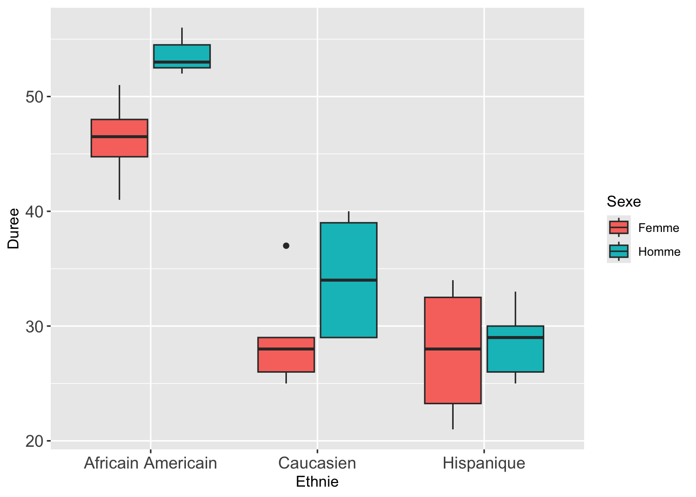
| Version | Author | Date |
|---|---|---|
| ef88e31 | Huong PHAM | 2026-03-08 |
En présence d’un design non-équilibré, la fonction aov() n’est pas adaptée pour réaliser une ANOVA. Nous allons donc passer par l’approche modélisation pour effectuer cette analyse. Ecrivez l’équation du modèle, puis estimez-le avec R.
## 4. ANOVA II : Approche modélisation
# Modification des contrastes :
contrasts(exercice2$Sexe) Homme
Femme 0
Homme 1contrasts(exercice2$Sexe) <- "contr.sum"
contrasts(exercice2$Sexe) [,1]
Femme 1
Homme -1contrasts(exercice2$Ethnie) Caucasien Hispanique
Africain Americain 0 0
Caucasien 1 0
Hispanique 0 1contrasts(exercice2$Ethnie) <- "contr.sum"
contrasts(exercice2$Ethnie) [,1] [,2]
Africain Americain 1 0
Caucasien 0 1
Hispanique -1 -1mod2 <- lm(Duree ~ Sexe + Ethnie + Sexe*Ethnie,
data = exercice2)Vérifiez les hypothèses du modèle, puis interprétez les résultats si cela vous semble pertinent. Que pouvez-vous dire ?
## 5. Vérification des hypothèses du modèle
# En raison de la présence de données manquantes le nombre de résidus, n'est pas le même que le
# nombre de ligne dans le dataset initial. Il est plus simple d'utiliser la ligne de code suivante
# pour vérifier les hypothèses du modèle.
plot(mod2)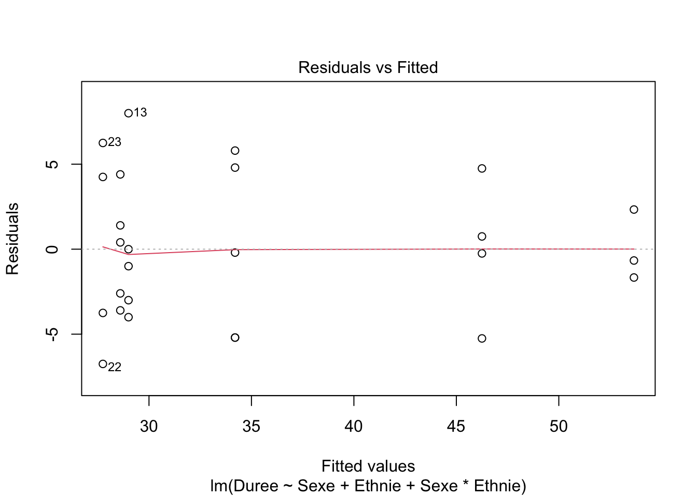
| Version | Author | Date |
|---|---|---|
| ef88e31 | Huong PHAM | 2026-03-08 |
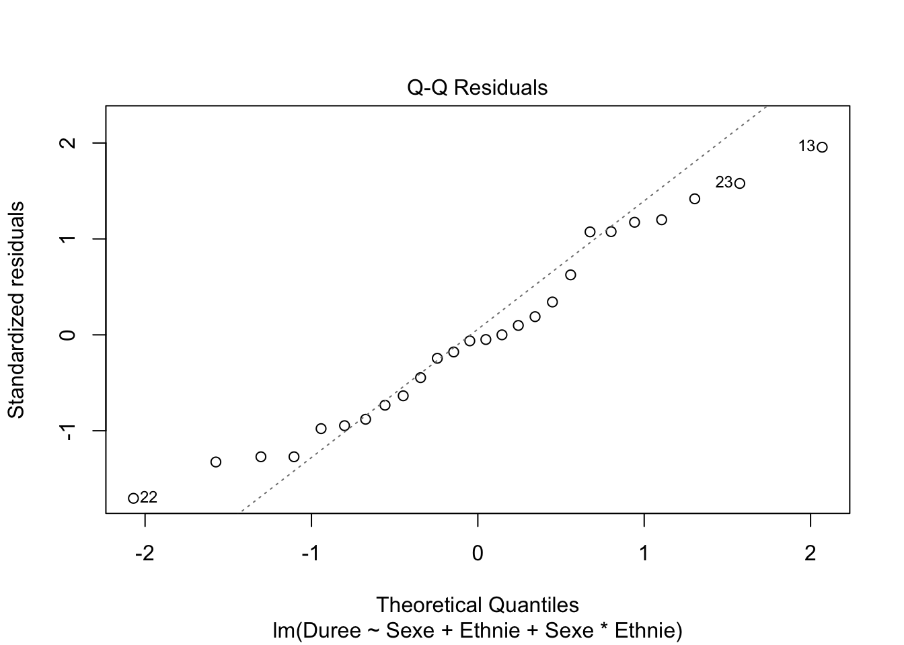
| Version | Author | Date |
|---|---|---|
| ef88e31 | Huong PHAM | 2026-03-08 |
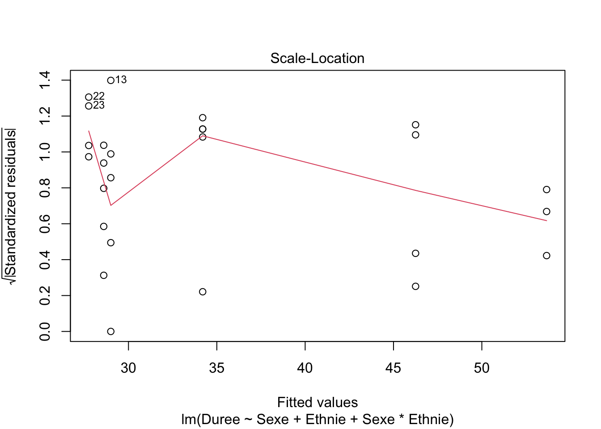
| Version | Author | Date |
|---|---|---|
| ef88e31 | Huong PHAM | 2026-03-08 |
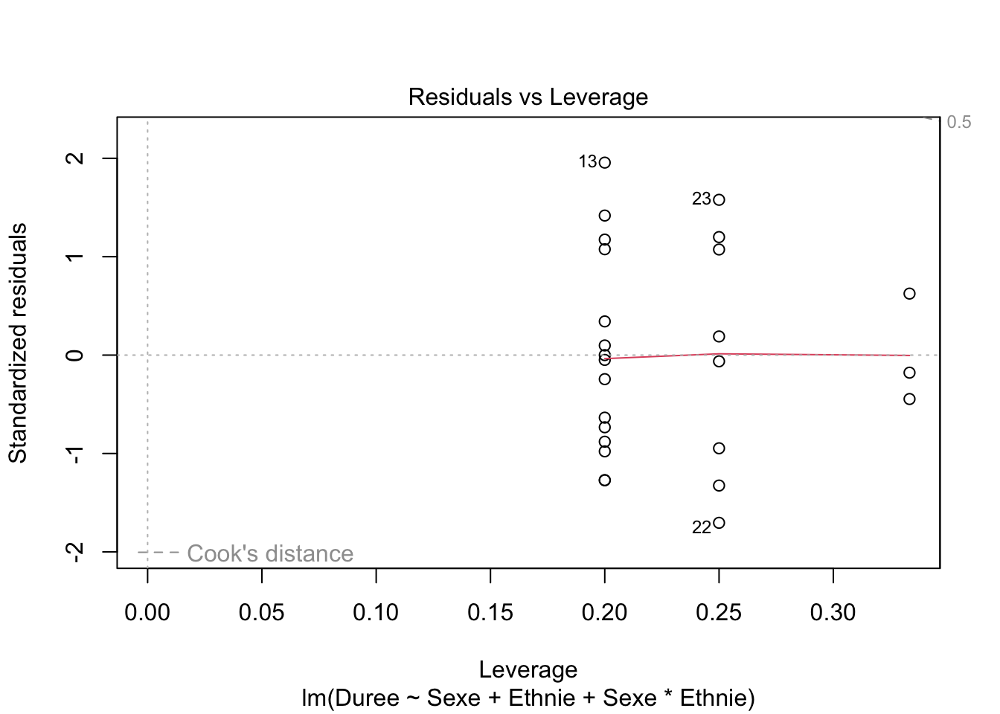
| Version | Author | Date |
|---|---|---|
| ef88e31 | Huong PHAM | 2026-03-08 |
shapiro.test(resid(mod2))
Shapiro-Wilk normality test
data: resid(mod2)
W = 0.96091, p-value = 0.4098# Résultats
Anova(mod2, type = "III") # Design non-équilibré => ANOVA de type IIIAnova Table (Type III tests)
Response: Duree
Sum Sq Df F value Pr(>F)
(Intercept) 33604 1 1607.2022 < 2.2e-16 ***
Sexe 127 1 6.0514 0.02312 *
Ethnie 2062 2 49.2990 1.86e-08 ***
Sexe:Ethnie 45 2 1.0791 0.35887
Residuals 418 20
---
Signif. codes: 0 '***' 0.001 '**' 0.01 '*' 0.05 '.' 0.1 ' ' 1# Réestimation du modèle sans interaction
mod3 <- lm(Duree ~ Sexe + Ethnie, data = exercice2)
# Vérification des hypothèses du modèle
plot(mod3)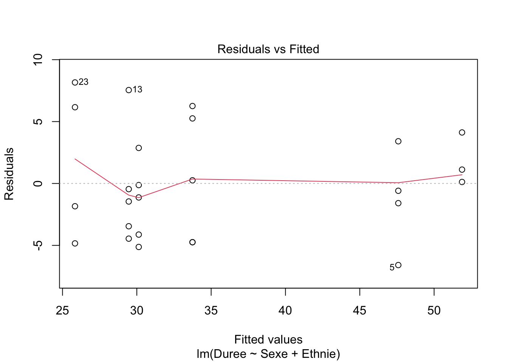
| Version | Author | Date |
|---|---|---|
| ef88e31 | Huong PHAM | 2026-03-08 |
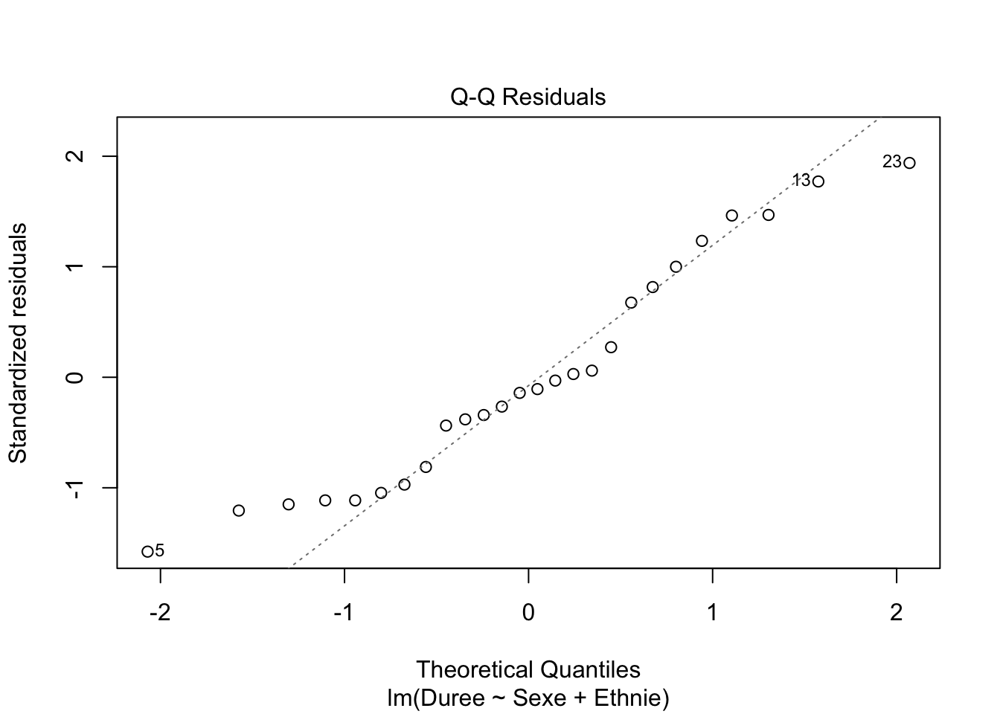
| Version | Author | Date |
|---|---|---|
| ef88e31 | Huong PHAM | 2026-03-08 |
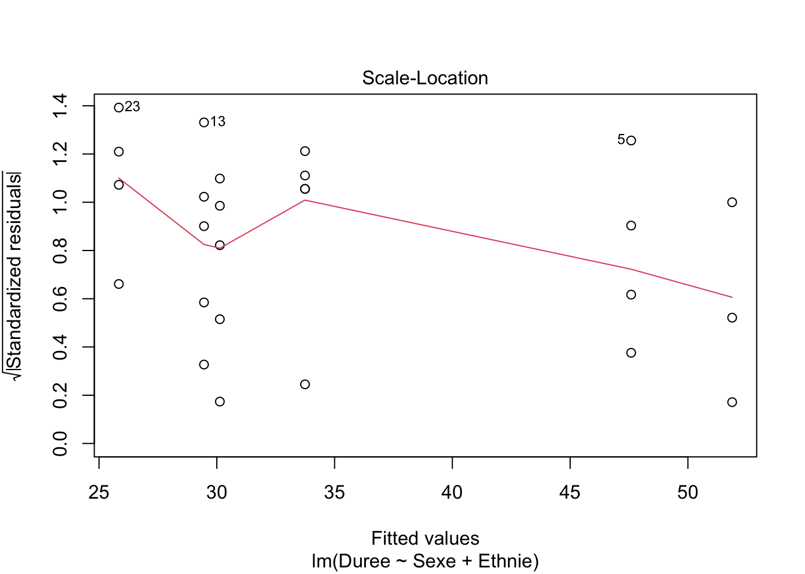
| Version | Author | Date |
|---|---|---|
| ef88e31 | Huong PHAM | 2026-03-08 |
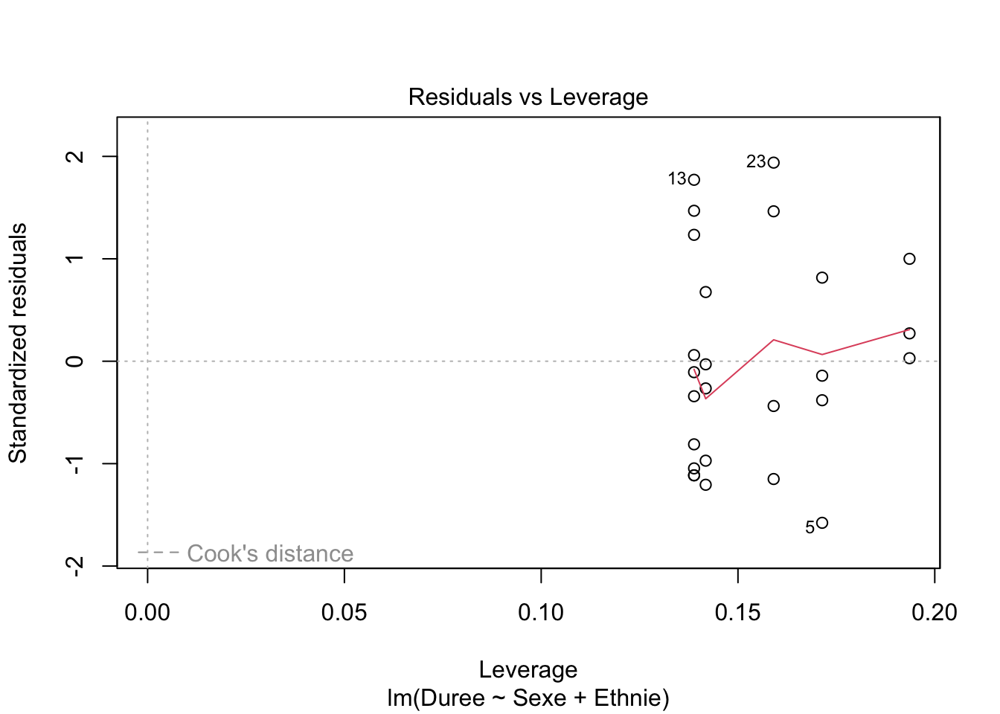
| Version | Author | Date |
|---|---|---|
| ef88e31 | Huong PHAM | 2026-03-08 |
shapiro.test(resid(mod3))
Shapiro-Wilk normality test
data: resid(mod3)
W = 0.94108, p-value = 0.1425# ANOVA II pour le nouveau modèle
Anova(mod3, type = "II")Anova Table (Type II tests)
Response: Duree
Sum Sq Df F value Pr(>F)
Sexe 118.38 1 5.6213 0.02692 *
Ethnie 2058.86 2 48.8837 8.034e-09 ***
Residuals 463.29 22
---
Signif. codes: 0 '***' 0.001 '**' 0.01 '*' 0.05 '.' 0.1 ' ' 1Effectuez des comparaisons deux à deux, puis représenter graphiquement les résultats obtenus. Que pouvez-vous conclure ?
## 6. Comparaison 2 à 2
library(emmeans)
emmeans(mod3, specs=pairwise ~ Sexe, adjust = "bonferroni")$emmeans
Sexe emmean SE df lower.CL upper.CL
Femme 34.3 1.28 22 31.6 36.9
Homme 38.6 1.29 22 35.9 41.3
Results are averaged over the levels of: Ethnie
Confidence level used: 0.95
$contrasts
contrast estimate SE df t.ratio p.value
Femme - Homme -4.29 1.81 22 -2.371 0.0269
Results are averaged over the levels of: Ethnie emmeans(mod3, specs=pairwise ~ Ethnie, adjust = "bonferroni")$emmeans
Ethnie emmean SE df lower.CL upper.CL
Africain Americain 49.7 1.74 22 46.1 53.3
Caucasien 31.6 1.45 22 28.6 34.6
Hispanique 28.0 1.53 22 24.8 31.2
Results are averaged over the levels of: Sexe
Confidence level used: 0.95
$contrasts
contrast estimate SE df t.ratio p.value
Africain Americain - Caucasien 18.13 2.27 22 8.006 <0.0001
Africain Americain - Hispanique 21.75 2.32 22 9.359 <0.0001
Caucasien - Hispanique 3.62 2.11 22 1.713 0.3023
Results are averaged over the levels of: Sexe
P value adjustment: bonferroni method for 3 tests emmeans(mod3, specs=pairwise ~ Sexe, adjust = "BH")$emmeans
Sexe emmean SE df lower.CL upper.CL
Femme 34.3 1.28 22 31.6 36.9
Homme 38.6 1.29 22 35.9 41.3
Results are averaged over the levels of: Ethnie
Confidence level used: 0.95
$contrasts
contrast estimate SE df t.ratio p.value
Femme - Homme -4.29 1.81 22 -2.371 0.0269
Results are averaged over the levels of: Ethnie emmeans(mod3, specs=pairwise ~ Ethnie, adjust = "BH")$emmeans
Ethnie emmean SE df lower.CL upper.CL
Africain Americain 49.7 1.74 22 46.1 53.3
Caucasien 31.6 1.45 22 28.6 34.6
Hispanique 28.0 1.53 22 24.8 31.2
Results are averaged over the levels of: Sexe
Confidence level used: 0.95
$contrasts
contrast estimate SE df t.ratio p.value
Africain Americain - Caucasien 18.13 2.27 22 8.006 <0.0001
Africain Americain - Hispanique 21.75 2.32 22 9.359 <0.0001
Caucasien - Hispanique 3.62 2.11 22 1.713 0.1008
Results are averaged over the levels of: Sexe
P value adjustment: BH method for 3 tests emmeans(mod3, specs=pairwise ~ Sexe, adjust = "holm")$emmeans
Sexe emmean SE df lower.CL upper.CL
Femme 34.3 1.28 22 31.6 36.9
Homme 38.6 1.29 22 35.9 41.3
Results are averaged over the levels of: Ethnie
Confidence level used: 0.95
$contrasts
contrast estimate SE df t.ratio p.value
Femme - Homme -4.29 1.81 22 -2.371 0.0269
Results are averaged over the levels of: Ethnie emmeans(mod3, specs=pairwise ~ Ethnie, adjust = "holm")$emmeans
Ethnie emmean SE df lower.CL upper.CL
Africain Americain 49.7 1.74 22 46.1 53.3
Caucasien 31.6 1.45 22 28.6 34.6
Hispanique 28.0 1.53 22 24.8 31.2
Results are averaged over the levels of: Sexe
Confidence level used: 0.95
$contrasts
contrast estimate SE df t.ratio p.value
Africain Americain - Caucasien 18.13 2.27 22 8.006 <0.0001
Africain Americain - Hispanique 21.75 2.32 22 9.359 <0.0001
Caucasien - Hispanique 3.62 2.11 22 1.713 0.1008
Results are averaged over the levels of: Sexe
P value adjustment: holm method for 3 tests Comparez les résultats des ANOVA de type I, II et III. Que constatez-vous ?
## 7. Comparaison ANOVA TYPE I, II et III
# Types I, II et III
anova(mod3) # Type IAnalysis of Variance Table
Response: Duree
Df Sum Sq Mean Sq F value Pr(>F)
Sexe 1 44.46 44.46 2.1113 0.1603
Ethnie 2 2058.86 1029.43 48.8837 8.034e-09 ***
Residuals 22 463.29 21.06
---
Signif. codes: 0 '***' 0.001 '**' 0.01 '*' 0.05 '.' 0.1 ' ' 1library(car)
Anova(mod3, type = "II") # Type IIAnova Table (Type II tests)
Response: Duree
Sum Sq Df F value Pr(>F)
Sexe 118.38 1 5.6213 0.02692 *
Ethnie 2058.86 2 48.8837 8.034e-09 ***
Residuals 463.29 22
---
Signif. codes: 0 '***' 0.001 '**' 0.01 '*' 0.05 '.' 0.1 ' ' 1Anova(mod3, type = "III") # Type IIIAnova Table (Type III tests)
Response: Duree
Sum Sq Df F value Pr(>F)
(Intercept) 33758 1 1603.0427 < 2.2e-16 ***
Sexe 118 1 5.6213 0.02692 *
Ethnie 2059 2 48.8837 8.034e-09 ***
Residuals 463 22
---
Signif. codes: 0 '***' 0.001 '**' 0.01 '*' 0.05 '.' 0.1 ' ' 1Contexte. On étudie la performance (temps moyen sur 100 m en secondes) selon deux facteurs : Entrainement (Endurance, Sprint) et Régime alimentaire (Standard, Hyperprotéiné, Végétarien). Les données se trouvent dans le fichier performance_sportive_anova2.csv. Questions :
Importez le fichier et mettez en forme les données si nécessaire.
## 1. Importation et mise en forme du jeu de données
performance_sportive <- read.csv(file = "/Volumes/ORICO/Modèle Linaire/TD ANOVA II-20260121/Exercices supplémentaires-20260308/performance_sportive_anova2.csv",
sep = ",",
dec = ".",
header = TRUE)
str(performance_sportive)'data.frame': 120 obs. of 3 variables:
$ Entrainement: chr "Endurance" "Endurance" "Endurance" "Endurance" ...
$ Regime : chr "Standard" "Standard" "Standard" "Standard" ...
$ Temps_100m_s: num 17.7 18.4 16.6 17.3 17.7 ...performance_sportive$Entrainement <- as.factor(performance_sportive$Entrainement)
performance_sportive$Regime <- as.factor(performance_sportive$Regime)
str(performance_sportive)'data.frame': 120 obs. of 3 variables:
$ Entrainement: Factor w/ 2 levels "Endurance","Sprint": 1 1 1 1 1 1 1 1 1 1 ...
$ Regime : Factor w/ 3 levels "Hyperproteine",..: 2 2 2 2 2 2 2 2 2 2 ...
$ Temps_100m_s: num 17.7 18.4 16.6 17.3 17.7 ...Décrivez la structure des données et les effectifs par combinaison de facteurs. Calculez le temps moyen sur 100m globale par facteur et par combinaison de facteurs, puis commentez.
## 2. Statistiques descriptives
table(performance_sportive$Entrainement, performance_sportive$Regime)
Hyperproteine Standard Vegetarien
Endurance 20 20 20
Sprint 20 20 20# => Design équilibré
mean(performance_sportive$Temps_100m_s)[1] 16.08633aggregate(Temps_100m_s ~ Entrainement,
data = performance_sportive,
FUN = mean) Entrainement Temps_100m_s
1 Endurance 17.80983
2 Sprint 14.36283aggregate(Temps_100m_s ~ Regime,
data = performance_sportive,
FUN = mean) Regime Temps_100m_s
1 Hyperproteine 15.50250
2 Standard 16.13775
3 Vegetarien 16.61875aggregate(Temps_100m_s ~ Regime + Entrainement,
data = performance_sportive,
FUN = mean) Regime Entrainement Temps_100m_s
1 Hyperproteine Endurance 17.4605
2 Standard Endurance 17.7490
3 Vegetarien Endurance 18.2200
4 Hyperproteine Sprint 13.5445
5 Standard Sprint 14.5265
6 Vegetarien Sprint 15.0175Représentez visuellement les moyennes par combinaison de facteurs et discutez une éventuelle interaction.
## 3. Représentation graphique des moyennes par combinaison de facteurs
ggplot(performance_sportive,
aes(x = Regime, y = Temps_100m_s, fill = Entrainement)) +
geom_boxplot() +
theme(axis.text = element_text(size=12)) 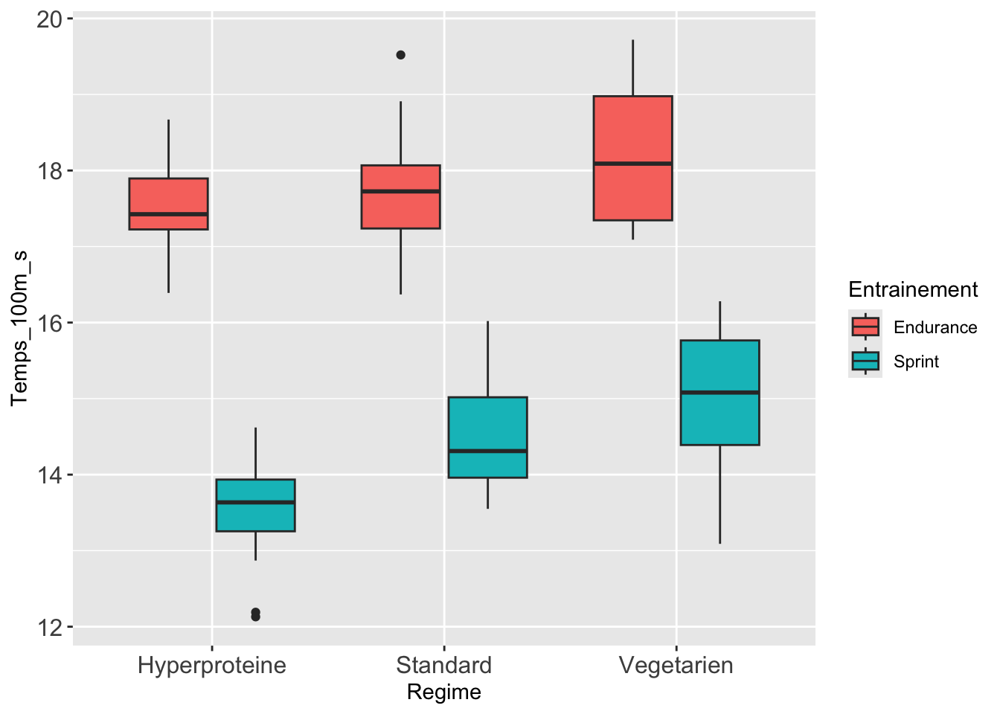
| Version | Author | Date |
|---|---|---|
| ef88e31 | Huong PHAM | 2026-03-08 |
Réalisez une ANOVA à deux facteurs avec interaction.
## 4. ANOVA II avec interaction
contrasts(performance_sportive$Regime) Standard Vegetarien
Hyperproteine 0 0
Standard 1 0
Vegetarien 0 1contrasts(performance_sportive$Regime) <- "contr.sum"
contrasts(performance_sportive$Regime) [,1] [,2]
Hyperproteine 1 0
Standard 0 1
Vegetarien -1 -1contrasts(performance_sportive$Entrainement) Sprint
Endurance 0
Sprint 1contrasts(performance_sportive$Entrainement) <- "contr.sum"
contrasts(performance_sportive$Entrainement) [,1]
Endurance 1
Sprint -1aov_1 <- lm(Temps_100m_s ~ Regime + Entrainement + Regime*Entrainement,
data = performance_sportive)Vérifiez les hypothèses (normalité des résidus, homogénéité des variances). Discutez la robustesse des conclusions.
## 5. Vérification des hypothèses
plot(aov_1, which = 1) # Homoscedasticité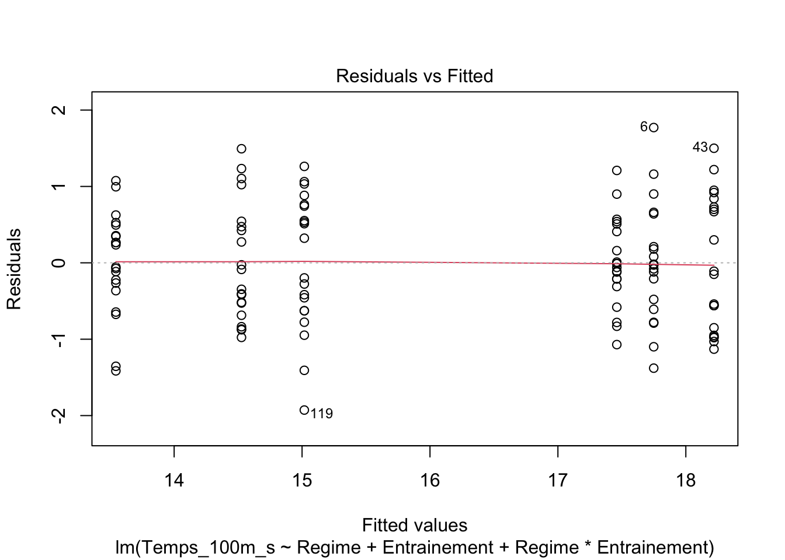
| Version | Author | Date |
|---|---|---|
| ef88e31 | Huong PHAM | 2026-03-08 |
plot(aov_1, which = 2) # Normalité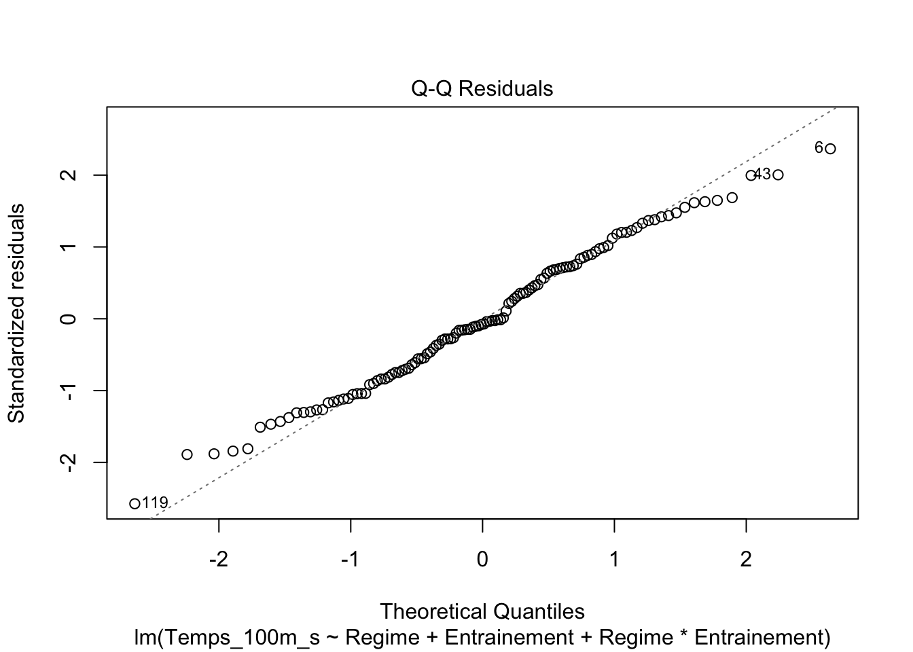
| Version | Author | Date |
|---|---|---|
| ef88e31 | Huong PHAM | 2026-03-08 |
Testez l’interaction et, si elle n’est pas significative, ré-estimez le mdoèle sans intéraction inter- prétez les effets principaux.
## 6. Evaluation de l'effet d'interaction
anova(aov_1)Analysis of Variance Table
Response: Temps_100m_s
Df Sum Sq Mean Sq F value Pr(>F)
Regime 2 25.08 12.54 21.2681 1.414e-08 ***
Entrainement 1 356.45 356.45 604.5805 < 2.2e-16 ***
Regime:Entrainement 2 3.30 1.65 2.7998 0.06501 .
Residuals 114 67.21 0.59
---
Signif. codes: 0 '***' 0.001 '**' 0.01 '*' 0.05 '.' 0.1 ' ' 1aov_2 <- lm(Temps_100m_s ~ Regime + Entrainement,
data = performance_sportive)
plot(aov_2, which = 1)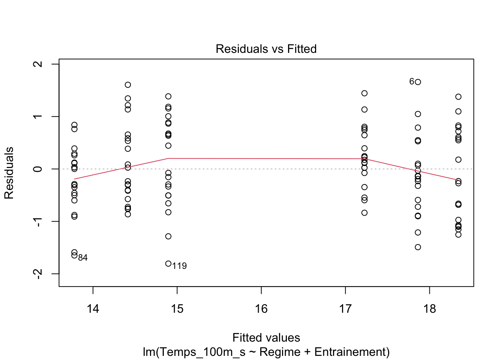
| Version | Author | Date |
|---|---|---|
| ef88e31 | Huong PHAM | 2026-03-08 |
plot(aov_2, which = 2)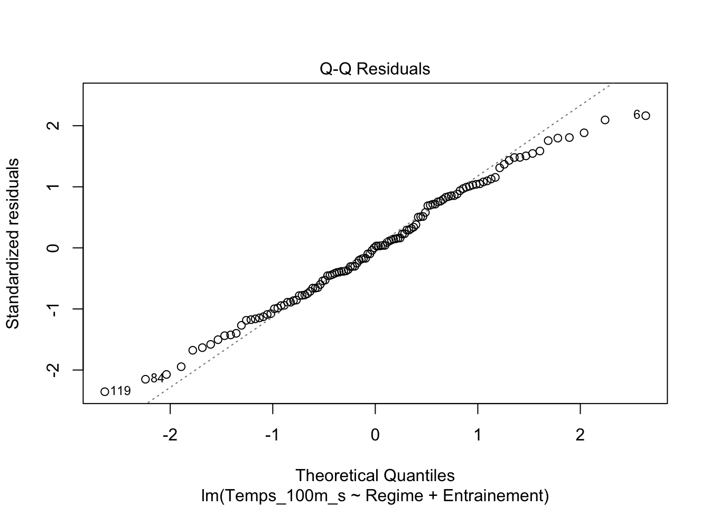
| Version | Author | Date |
|---|---|---|
| ef88e31 | Huong PHAM | 2026-03-08 |
anova(aov_2)Analysis of Variance Table
Response: Temps_100m_s
Df Sum Sq Mean Sq F value Pr(>F)
Regime 2 25.08 12.54 20.628 2.164e-08 ***
Entrainement 1 356.45 356.45 586.385 < 2.2e-16 ***
Residuals 116 70.51 0.61
---
Signif. codes: 0 '***' 0.001 '**' 0.01 '*' 0.05 '.' 0.1 ' ' 1Si pertinent, effectuez des comparaisons deux à deux tout en controlant pour l’erreur de type I.
## 7. Comparaison 2 à 2
emmeans(aov_2, specs=pairwise ~ Regime, adjust = "BH")$emmeans
Regime emmean SE df lower.CL upper.CL
Hyperproteine 15.5 0.123 116 15.3 15.7
Standard 16.1 0.123 116 15.9 16.4
Vegetarien 16.6 0.123 116 16.4 16.9
Results are averaged over the levels of: Entrainement
Confidence level used: 0.95
$contrasts
contrast estimate SE df t.ratio p.value
Hyperproteine - Standard -0.635 0.174 116 -3.644 0.0006
Hyperproteine - Vegetarien -1.116 0.174 116 -6.403 <0.0001
Standard - Vegetarien -0.481 0.174 116 -2.759 0.0067
Results are averaged over the levels of: Entrainement
P value adjustment: BH method for 3 tests emmeans(aov_2, specs=pairwise ~ Entrainement, adjust = "BH")$emmeans
Entrainement emmean SE df lower.CL upper.CL
Endurance 17.8 0.101 116 17.6 18.0
Sprint 14.4 0.101 116 14.2 14.6
Results are averaged over the levels of: Regime
Confidence level used: 0.95
$contrasts
contrast estimate SE df t.ratio p.value
Endurance - Sprint 3.45 0.142 116 24.215 <0.0001
Results are averaged over the levels of: Regime Concluez sur l’effet des facteurs et l’éventuelle interaction.
Contexte. On évalue le score de douleur EVA (0–10) 2h après chirurgie selon deux facteurs : le Trai- tement (Morphinique, Non-morphinique) et le Moment d’administration du traitement (Avant, Pendant, Après l’intervention). Les données se trouvent dans le fichier douleur_postop_anova2.csv. Questions.
Importez le fichier et mettez en forme les données si nécessaire.
## 1. Importation et mise en forme des données
douleur_postop <- read.csv(file = "/Volumes/ORICO/Modèle Linaire/TD ANOVA II-20260121/Exercices supplémentaires-20260308/douleur_postop_anova2.csv",
sep = ",",
dec = ".",
header = TRUE)
str(douleur_postop)'data.frame': 69 obs. of 3 variables:
$ Traitement : chr "Morphinique" "Morphinique" "Morphinique" "Morphinique" ...
$ Moment : chr "Avant" "Avant" "Avant" "Avant" ...
$ Douleur_EVA_2h: num 5 3.63 4.74 6.22 3.92 4.7 3.01 5.24 5.24 3.81 ...douleur_postop$Traitement <- as.factor(douleur_postop$Traitement)
douleur_postop$Moment <- as.factor(douleur_postop$Moment)
str(douleur_postop)'data.frame': 69 obs. of 3 variables:
$ Traitement : Factor w/ 2 levels "Morphinique",..: 1 1 1 1 1 1 1 1 1 1 ...
$ Moment : Factor w/ 3 levels "Apres","Avant",..: 2 2 2 2 2 2 2 2 2 2 ...
$ Douleur_EVA_2h: num 5 3.63 4.74 6.22 3.92 4.7 3.01 5.24 5.24 3.81 ...Dressez la table des effectifs par combinaison de facteurs. Le design est-il équilibré ?
## 2. Tableau des effectifs par combinaison de facteurs
table(douleur_postop$Traitement, douleur_postop$Moment)
Apres Avant Pendant
Morphinique 16 12 9
Non_morphinique 10 8 14# => Design non-équilibréRéalisez des statistiques descriptives (globales, par facteur, par combinaison de facteurs) et représentez les moyennes par combinaison de facteurs. Formulez une hypothèse sur l’interaction.
## 3. Statistiques descriptives
mean(douleur_postop$Douleur_EVA_2h)[1] 5.007101aggregate(Douleur_EVA_2h ~ Traitement,
data = douleur_postop,
FUN = mean) Traitement Douleur_EVA_2h
1 Morphinique 4.408108
2 Non_morphinique 5.699688aggregate(Douleur_EVA_2h ~ Moment,
data = douleur_postop,
FUN = mean) Moment Douleur_EVA_2h
1 Apres 5.426538
2 Avant 4.872500
3 Pendant 4.650000aggregate(Douleur_EVA_2h ~ Traitement + Moment,
data = douleur_postop,
FUN = mean) Traitement Moment Douleur_EVA_2h
1 Morphinique Apres 4.890625
2 Non_morphinique Apres 6.284000
3 Morphinique Avant 4.420000
4 Non_morphinique Avant 5.551250
5 Morphinique Pendant 3.534444
6 Non_morphinique Pendant 5.367143## Représentation graphique
ggplot(douleur_postop,
aes(x = Moment, y = Douleur_EVA_2h, fill = Traitement)) +
geom_boxplot() +
theme(axis.text = element_text(size=12)) 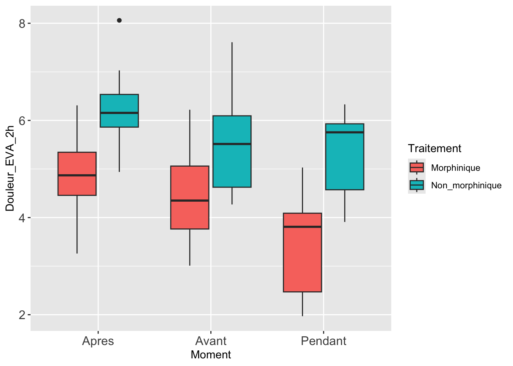
| Version | Author | Date |
|---|---|---|
| ef88e31 | Huong PHAM | 2026-03-08 |
Réalisez une ANOVA à deux facteurs via l’approche modélisation (modèle linéaire).
## 4. Estimation modèle ANOVA 2
contrasts(douleur_postop$Traitement) Non_morphinique
Morphinique 0
Non_morphinique 1contrasts(douleur_postop$Traitement) <- "contr.sum"
contrasts(douleur_postop$Traitement) [,1]
Morphinique 1
Non_morphinique -1contrasts(douleur_postop$Moment) Avant Pendant
Apres 0 0
Avant 1 0
Pendant 0 1contrasts(douleur_postop$Moment) <- 'contr.sum'
contrasts(douleur_postop$Moment) [,1] [,2]
Apres 1 0
Avant 0 1
Pendant -1 -1aov_3 <- lm(Douleur_EVA_2h ~ Traitement + Moment + Traitement*Moment,
data = douleur_postop)Vérifiez les hypothèses (normalité, homogénéité). Discutez la robustesse des conclusions.
## 5. Vérification des hypothèses
plot(aov_3, which = 1) # Homoscedasticité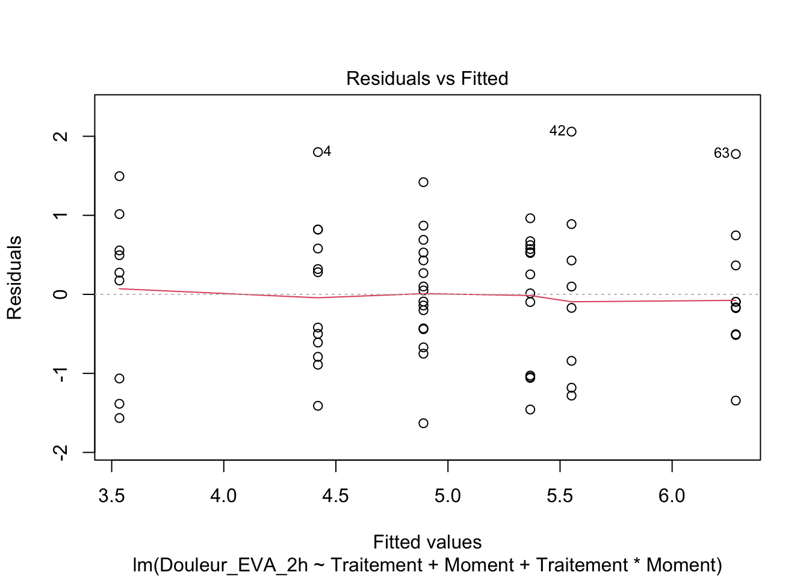
| Version | Author | Date |
|---|---|---|
| ef88e31 | Huong PHAM | 2026-03-08 |
plot(aov_3, which = 2) # Normalité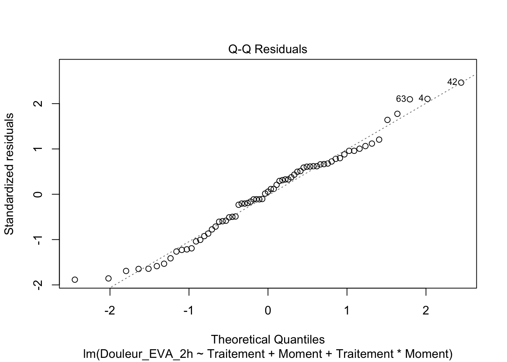
| Version | Author | Date |
|---|---|---|
| ef88e31 | Huong PHAM | 2026-03-08 |
Comparez les résultats obtenus à l’aide des ANOVA de type I, II et III. Laquelle faut-il choisir pour conclure ? Pourquoi ?
## 6. Comparaisons des anova de type I, II et III
anova(aov_3) # Type IAnalysis of Variance Table
Response: Douleur_EVA_2h
Df Sum Sq Mean Sq F value Pr(>F)
Traitement 1 28.625 28.6250 35.8601 1.111e-07 ***
Moment 2 14.428 7.2141 9.0376 0.0003542 ***
Traitement:Moment 2 1.307 0.6534 0.8186 0.4456893
Residuals 63 50.289 0.7982
---
Signif. codes: 0 '***' 0.001 '**' 0.01 '*' 0.05 '.' 0.1 ' ' 1Anova(aov_3, type = "II")Anova Table (Type II tests)
Response: Douleur_EVA_2h
Sum Sq Df F value Pr(>F)
Traitement 35.184 1 44.0767 8.473e-09 ***
Moment 14.428 2 9.0376 0.0003542 ***
Traitement:Moment 1.307 2 0.8186 0.4456893
Residuals 50.289 63
---
Signif. codes: 0 '***' 0.001 '**' 0.01 '*' 0.05 '.' 0.1 ' ' 1Anova(aov_3, type = "III")Anova Table (Type III tests)
Response: Douleur_EVA_2h
Sum Sq Df F value Pr(>F)
(Intercept) 1631.54 1 2043.9208 < 2.2e-16 ***
Traitement 34.31 1 42.9821 1.179e-08 ***
Moment 15.03 2 9.4171 0.0002641 ***
Traitement:Moment 1.31 2 0.8186 0.4456893
Residuals 50.29 63
---
Signif. codes: 0 '***' 0.001 '**' 0.01 '*' 0.05 '.' 0.1 ' ' 1L’interaction est-elle significative? Si non, re-estimez le modèle sans interaction puis concluez quant aux effets des deux facteurs.
## 7. Evaluation de l'effet d'interaction
Anova(aov_3, type = "III")Anova Table (Type III tests)
Response: Douleur_EVA_2h
Sum Sq Df F value Pr(>F)
(Intercept) 1631.54 1 2043.9208 < 2.2e-16 ***
Traitement 34.31 1 42.9821 1.179e-08 ***
Moment 15.03 2 9.4171 0.0002641 ***
Traitement:Moment 1.31 2 0.8186 0.4456893
Residuals 50.29 63
---
Signif. codes: 0 '***' 0.001 '**' 0.01 '*' 0.05 '.' 0.1 ' ' 1# => Intéraction non-significative.
aov_4 <- lm(Douleur_EVA_2h ~ Traitement + Moment,
data = douleur_postop)
plot(aov_4, which = 1)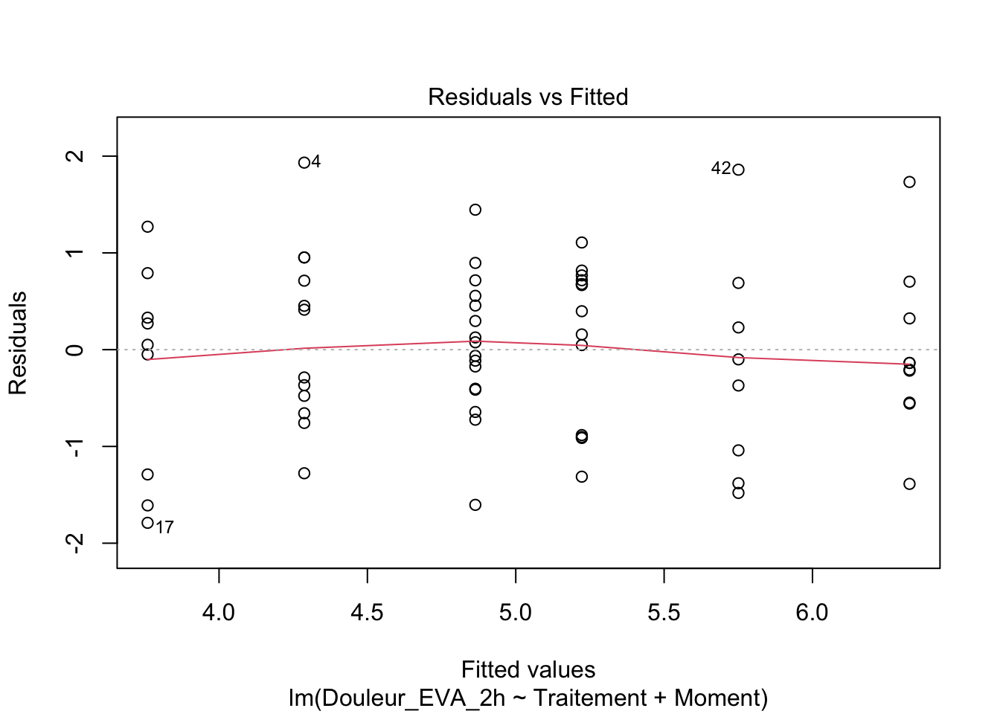
| Version | Author | Date |
|---|---|---|
| ef88e31 | Huong PHAM | 2026-03-08 |
plot(aov_4, which = 2)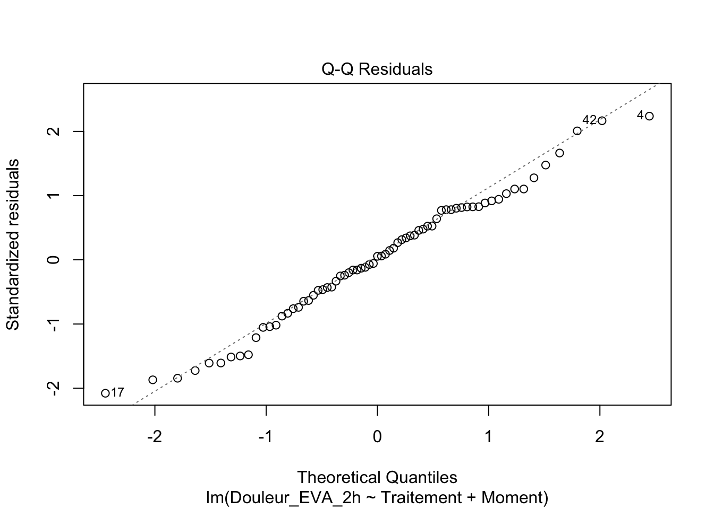
| Version | Author | Date |
|---|---|---|
| ef88e31 | Huong PHAM | 2026-03-08 |
Anova(aov_4, type = "II")Anova Table (Type II tests)
Response: Douleur_EVA_2h
Sum Sq Df F value Pr(>F)
Traitement 35.184 1 44.3241 6.954e-09 ***
Moment 14.428 2 9.0883 0.0003309 ***
Residuals 51.596 65
---
Signif. codes: 0 '***' 0.001 '**' 0.01 '*' 0.05 '.' 0.1 ' ' 1Effectuez des comparaisons deux à deux si cela vous semble pertinent, et synthétisez les résultats.
## 8. Comparaison 2 à 2
emmeans(aov_4, specs=pairwise ~ Traitement, adjust = "BH")$emmeans
Traitement emmean SE df lower.CL upper.CL
Morphinique 4.30 0.149 65 4.01 4.60
Non_morphinique 5.77 0.160 65 5.45 6.09
Results are averaged over the levels of: Moment
Confidence level used: 0.95
$contrasts
contrast estimate SE df t.ratio p.value
Morphinique - Non_morphinique -1.46 0.22 65 -6.658 <0.0001
Results are averaged over the levels of: Moment emmeans(aov_4, specs=pairwise ~ Moment, adjust = "BH")$emmeans
Moment emmean SE df lower.CL upper.CL
Apres 5.60 0.177 65 5.24 5.95
Avant 5.02 0.200 65 4.62 5.42
Pendant 4.49 0.187 65 4.12 4.87
Results are averaged over the levels of: Traitement
Confidence level used: 0.95
$contrasts
contrast estimate SE df t.ratio p.value
Apres - Avant 0.577 0.265 65 2.176 0.0498
Apres - Pendant 1.104 0.260 65 4.252 0.0002
Avant - Pendant 0.528 0.276 65 1.911 0.0604
Results are averaged over the levels of: Traitement
P value adjustment: BH method for 3 tests Concluez et proposez une recommandation clinique.
sessionInfo()R version 4.4.2 (2024-10-31)
Platform: aarch64-apple-darwin20
Running under: macOS Ventura 13.6.3
Matrix products: default
BLAS: /Library/Frameworks/R.framework/Versions/4.4-arm64/Resources/lib/libRblas.0.dylib
LAPACK: /Library/Frameworks/R.framework/Versions/4.4-arm64/Resources/lib/libRlapack.dylib; LAPACK version 3.12.0
locale:
[1] en_US.UTF-8/en_US.UTF-8/en_US.UTF-8/C/en_US.UTF-8/en_US.UTF-8
time zone: Europe/Paris
tzcode source: internal
attached base packages:
[1] stats graphics grDevices utils datasets methods base
other attached packages:
[1] ggpubr_0.6.2 emmeans_2.0.1 car_3.1-5 carData_3.0-6
[5] rstatix_0.7.3 lubridate_1.9.5 forcats_1.0.1 stringr_1.6.0
[9] dplyr_1.2.0 purrr_1.2.1 readr_2.1.6 tidyr_1.3.2
[13] tibble_3.3.1 ggplot2_4.0.2 tidyverse_2.0.0 workflowr_1.7.2
loaded via a namespace (and not attached):
[1] gtable_0.3.6 xfun_0.56 bslib_0.10.0 processx_3.8.6
[5] lattice_0.22-9 callr_3.7.6 tzdb_0.5.0 vctrs_0.7.1
[9] tools_4.4.2 ps_1.9.1 generics_0.1.4 sandwich_3.1-1
[13] pkgconfig_2.0.3 Matrix_1.7-4 RColorBrewer_1.1-3 S7_0.2.1
[17] lifecycle_1.0.5 compiler_4.4.2 farver_2.1.2 git2r_0.36.2
[21] codetools_0.2-20 getPass_0.2-4 httpuv_1.6.16 htmltools_0.5.9
[25] sass_0.4.10 yaml_2.3.12 Formula_1.2-5 later_1.4.6
[29] pillar_1.11.1 jquerylib_0.1.4 whisker_0.4.1 MASS_7.3-65
[33] cachem_1.1.0 multcomp_1.4-29 abind_1.4-8 tidyselect_1.2.1
[37] digest_0.6.39 mvtnorm_1.3-3 stringi_1.8.7 splines_4.4.2
[41] labeling_0.4.3 rprojroot_2.1.1 fastmap_1.2.0 grid_4.4.2
[45] cli_3.6.5 magrittr_2.0.4 survival_3.8-6 utf8_1.2.6
[49] TH.data_1.1-5 broom_1.0.12 withr_3.0.2 scales_1.4.0
[53] promises_1.5.0 backports_1.5.0 timechange_0.4.0 estimability_1.5.1
[57] rmarkdown_2.30 httr_1.4.8 otel_0.2.0 ggsignif_0.6.4
[61] zoo_1.8-15 hms_1.1.4 coda_0.19-4.1 evaluate_1.0.5
[65] knitr_1.51 rlang_1.1.7 Rcpp_1.1.1 glue_1.8.0
[69] rstudioapi_0.18.0 jsonlite_2.0.0 R6_2.6.1 fs_1.6.6